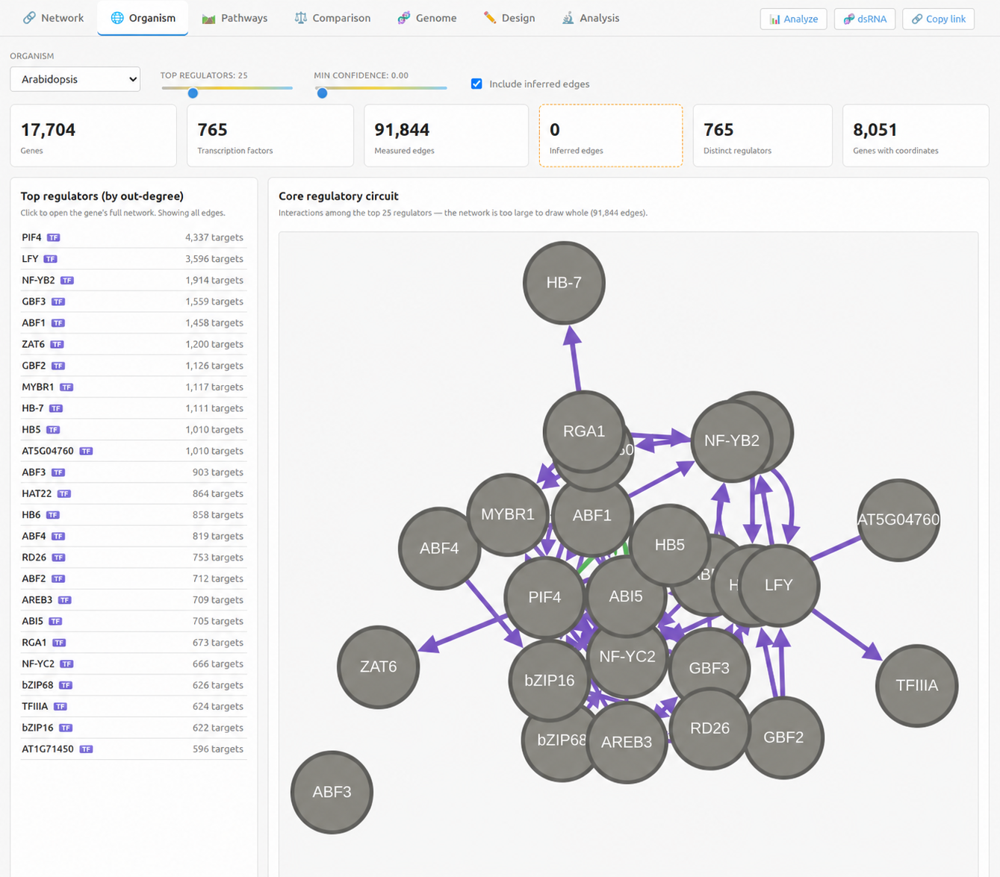
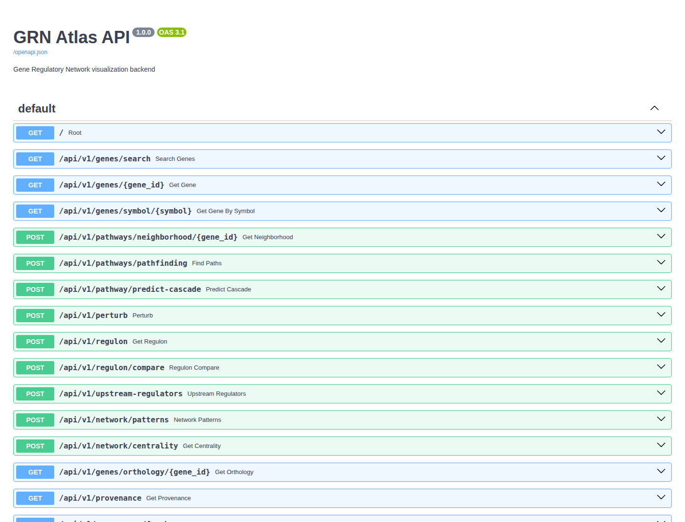

Public Release: GRN Atlas for Multi-Species Gene Regulatory Network Research
Explore the repository on GitHub →Quick Summary
Today we’re publicly releasing GRN Atlas for academic and non-commercial use.
GRN Atlas is a multi-species gene regulatory network platform for exploring regulatory edges, promoter and motif context, expression, pathways, traits, orthology, perturbation effects, and RNAi-oriented dsRNA design across human, mouse, Arabidopsis, tomato, and petunia. It includes both an interactive web UI and a structured skill layer for agent-driven workflows. The current release ships with 42 documented skills, including 41 callable analysis and workflow skills plus one overview/router skill. In testing with Nvidia Nemotron-3-Ultra via OpenRouter, the latest full reruns reached 283/305 pass on single-skill natural-language cases and 33/35 pass on multi-skill orchestration questions.
Why We Built It
Researchers do not usually ask one-step questions.
A real workflow looks more like this:
- identify the regulators of a gene
- compare those regulators across species
- inspect whether motif evidence supports the edge
- ask whether the same story appears in expression
- test what happens if the regulator is perturbed
- decide whether the evidence is strong enough to justify an experiment
- hand the result to a collaborator in a readable form
Most biological software handles only one piece of that chain. GRN Atlas was built to close that gap and give researchers a single place to move from question to hypothesis to next action.
What GRN Atlas Is
GRN Atlas is an integrated research workspace for gene regulatory network analysis.
It combines:
- curated regulatory interactions
- inferred regulatory edges
- promoter and motif context
- plant expression panels
- pathway and trait enrichment
- orthology and cross-species conservation
- signed perturbation analysis
- RNAi-oriented dsRNA design and screening
- evidence-audit and experiment-planning workflows
The atlas currently supports five species: human, mouse, Arabidopsis, tomato, and petunia.
Some layers are measured, some are projected, and some are computationally inferred or predicted. A core design rule is that these are never mixed without labeling.
What You Can Do With It
1. Explore a gene’s regulatory neighborhood
- who regulates this gene?
- what genes does this TF regulate?
- is there a path from gene A to gene B?
- what subgraph connects this candidate set?
2. Interpret a gene set biologically
- what GO terms are enriched?
- what pathways are overrepresented?
- what traits are associated with this set?
- which upstream TFs best explain the genes I care about?
3. Compare across species
- what is the ortholog of this gene?
- is this regulatory edge conserved?
- does a gene-level claim transfer from one species to another?
- what caveats should I keep in mind before extrapolating?
4. Predict interventions
- what happens if I knock out MYC?
- how does a cascade propagate if a regulator increases 1.5-fold?
- which downstream genes are predicted to change?
- what biological processes are enriched among affected targets?
5. Design and compare RNAi strategies
- can a dsRNA be designed for this target?
- which of several candidate genes is the cleanest RNAi target?
- which target has the lowest off-target burden?
- what happens downstream if I silence the winner?
6. Turn analysis into decisions
- is there enough atlas coverage for this analysis?
- which candidates should I prioritize?
- what is the confidence boundary here?
- what is the smallest defensible next step?
- how do I turn this into a validation plan, study packet, or report?
The Web UI
GRN Atlas ships with a browser-based interface for interactive exploration.
The UI supports:
- gene search by symbol, alias, name, or ID
- network browsing
- subgraph extraction
- motif and promoter analysis
- expression and coexpression views
- centrality and module analysis
- inferred-edge and differential-regulation panels
- export and handoff workflows
Representative panel groups include: Regulon & Upstream, Network Structure, Inference & Comparison, Export, and Workflows.
This release includes a working frontend for direct use by researchers as well as an API-backed analysis layer for more structured workflows.

| Workflow | Chain | What it does |
|---|---|---|
| Inferred → Enrichment | grn-infer → grn-enrichment |
Predict TF targets and GO-enrich the target set |
| Research Brief | grn-candidate-triage → grn-experiment-prioritization → grn-evidence-audit / grn-coverage-report |
Build a structured next-step brief |
| Validation Plan | grn-research-brief → grn-validation-plan |
Convert a brief into a go/no-go plan |
| Study Packet | grn-research-brief → grn-validation-plan → grn-study-packet |
Assemble a collaborator handoff packet |
| Study Report | grn-study-packet → grn-study-report |
Turn the packet into a collaborator-facing report |
The Skill Layer
GRN Atlas also includes an AgentSkills-style skill library for structured tool use.
The repository currently contains 42 documented skills:
- 41 callable analysis/workflow skills
- 1 overview/router skill
Core gene and network skills
grn-gene-search, grn-gene-info, grn-network, grn-pathfinding, grn-subgraph
Functional interpretation skills
grn-enrichment, grn-expression, grn-coexpression, grn-upstream, grn-stats, grn-species, grn-provenance, grn-citations
Graph and circuit analysis skills
grn-regulon, grn-regulon-compare, grn-network-patterns, grn-centrality, grn-module, grn-motif, grn-export
Perturbation and inference skills
grn-perturbation, grn-cascade, grn-diff-regulation, grn-infer
Cross-species skills
grn-orthology, grn-conservation, grn-transferability
RNAi and dsRNA skills
grn-dsrna, grn-dsrna-screen
Evidence and decision-support skills
grn-evidence-audit, grn-coverage-report, grn-candidate-triage, grn-experiment-prioritization, grn-confidence-boundary, grn-minimal-validation, grn-evidence-synthesis, grn-hypothesis-compare, grn-research-brief, grn-validation-plan, grn-study-packet, grn-study-report
Overview skill
grn-atlas-overview
Why the Skill Layer Matters
A useful research assistant is not just a model with access to endpoints. It needs a stable vocabulary of actions.
Screen these RNAi candidates, pick the cleanest one, predict the perturbation effects, and summarize enriched biology.
That is not one database call. In GRN Atlas, that workflow can be expressed as grn-dsrna-screen → grn-perturbation → grn-enrichment. That structure matters for reproducibility, testing, and failure analysis.
Testing With Nemotron-3-Ultra
We tested the skill system with Nvidia Nemotron-3-Ultra through OpenRouter to evaluate two distinct behaviors:
- single-skill selection
- multi-skill orchestration
Single-skill LLM testing
The latest full single-skill rerun covered 305 cases.
- 305/305 tested
- 283/305 full-case passes
- 285/305 correct tool selections
- 93.4% tool-selection accuracy
Multi-skill orchestration testing
The latest full orchestration rerun covered 35 questions.
- 35/35 tested
- 33/35 passes
- 142 total tool calls
- 2.6 average skills per question
These orchestration questions cover shared regulator analysis, RNAi design and screening, perturbation plus enrichment, cross-species conservation workflows, regulon comparison plus pathway analysis, inferred-edge validation, candidate triage, confidence-boundary reasoning, evidence synthesis, validation planning, and collaborator handoff/reporting.
What improved during testing
The Nemotron evaluation directly shaped the skill layer. We improved frontmatter descriptions, distinction between overlapping skills, workflow sequencing guidance in skill bodies, orchestration harness checks, RNAi-screen evaluation coverage, and collaborator-handoff and validation-plan chaining.
The result is not just a library of tools. It is a release candidate that has been exercised with both deterministic tests and external LLM-driven tool use.

Data, Evidence, and Trust
GRN Atlas makes several distinctions explicit:
- curated vs inferred regulatory edges
- measured vs predicted sequence or binding evidence
- direct lookup vs model-based ranking
- species-specific support vs transferability assumptions
That makes the atlas useful for exploration without blurring the line between evidence classes.
Release Model
GRN Atlas is being released publicly for academic and non-commercial use.
The repository is source-available under a non-commercial license. Academic research, education, and non-commercial experimentation are allowed under the repository terms. Commercial use, hosted productization, or service deployment requires separate permission.
The software license covers the code in the repository. Third-party data fetched into the atlas remains under the terms of the original upstream sources.
You can browse the code and documentation here: https://github.com/cairninstitute/grn-atlas
What This Release Is For
This release is for researchers who want to:
- explore regulatory hypotheses across multiple species
- connect network structure to expression, motifs, and pathways
- reason about perturbations and interventions
- compare evidence across curated, inferred, and predicted layers
- prioritize experiments
- produce collaborator-ready outputs from structured analyses
It is also for teams interested in building agent-assisted biology workflows on top of a tested, skill-based analysis layer.
Frequently Asked Questions
Is this a regulatory network database?
Yes, but it is more than that. It is a regulatory-network-centered research workspace with workflow tools layered on top.
Does it separate curated and inferred results?
Yes. That distinction is a core design rule.
Can I use it through the web UI only?
Yes. The UI supports direct interactive use.
Can I use it through agent tools?
Yes. The repository includes the full skill layer in .agents/skills/.
How many skills are included?
42 documented skills total: 41 callable analysis/workflow skills and 1 overview/router skill.
How well does an external LLM use the skills?
In the latest Nemotron full reruns: single-skill tool selection accuracy was 93.4%, and orchestration reached 33/35 pass.
Is this open source?
No, not in the OSI sense. It is source-available for non-commercial use.
Further Reading
- GRN Atlas repository documentation
- GRN Atlas provenance and citation endpoints
- CAIRN Institute website
Questions or Feedback?
Contact us at info@cairninstitute.com or visit our website.